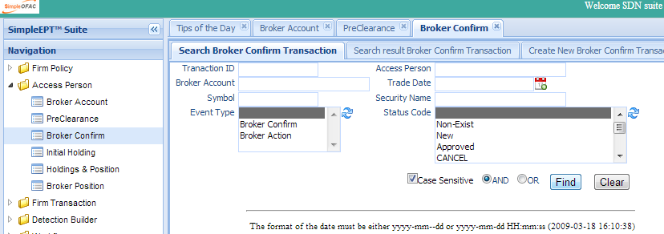
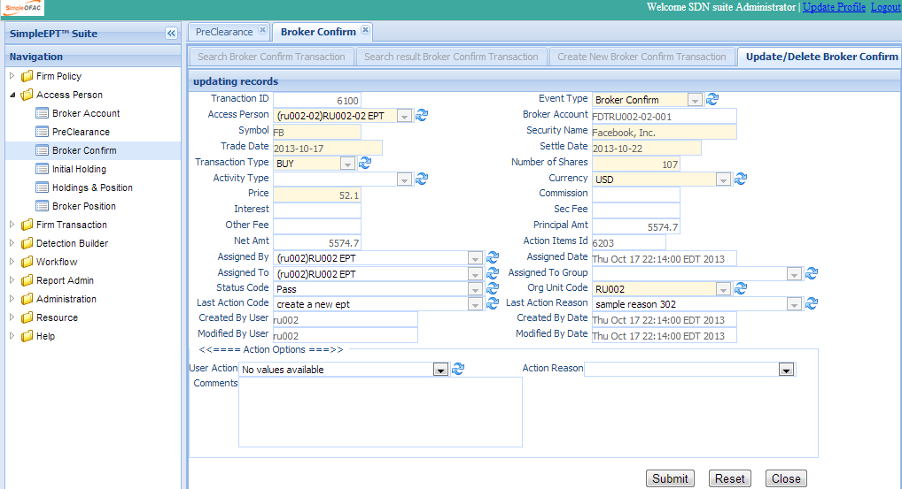
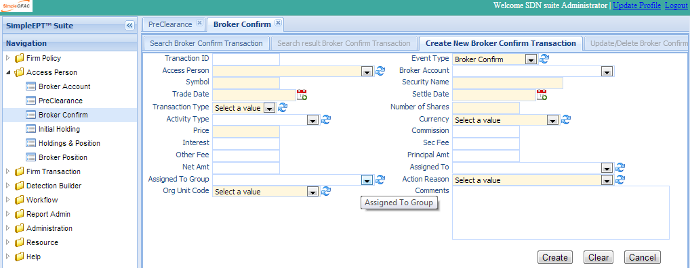

The Broker Confirm screen allows compliance officers to input broker confirm, broker action transaction, and map the broker confirm transaction to pre-clearance request. Each transaction will validate against the firm rules and generate transaction status. Compliance officers also are able to check the validation status, add comments, and attached supporting documents; All of these are logged for audit.
Click the Broker Confirm in the left navigation menu under Access Person and a new Broker Confirm Tab folder will be created in the right panel. There are 3 sub-Tab folders: Search Broker Confirm, Search Result Broker Confirm and Create New Broker Confirm.
Search Criteria
Tranaction ID Event Type Access Person Broker Account Symbol Security Name Entry Date Transaction Type Option Flag Option Symbol Option Type Sec Offer Flag Ipo Flag Private Offer Flag Activity Type Order Type Currency Request Shares Principal Amt Assigned To Assigned To Group Action Reason Org Unit Code
Tranaction ID Access Person Broker Account Entry Date Symbol Security Name Event Type Status Code ================ =================================================================================== Field Name Description ================ =================================================================================== Tranaction ID Transaction unique record identifier. Access Person The access person that request the transaction. Broker Account The broker account number. Trade Date The date when the transaction occurred. Symbol The symbol of the security. Security Name The name of the security. Event Type Transaction event type. eg broker confirm, broker action. Status Code The status of this transaction; eg passed. failed, etc. Org Unit Code The org unit this transaction belongs to. AND Select AND radio box if you want those criteria added together. OR Select OR radio box if you want to get the result if either of the criteria is met. ================ ===================================================================================
The top part is the table which shows the list of the Broker Confirm that meet the search criteria. The bottom part is the details, Rule Validation, Document, Email, and Action Logs of the selected entry.
Double Click the selected record in the table to modify this entry. A new tab folder “Update/Delete Broker Confirm” will be added, as shown below.
Select the “Create New Broker Confirm” Tab to create a new entry.
| Field Name | Description |
Tranaction ID Transaction unique record identifier. Event Type Transaction event type. eg broker confirm, broker action. Access Person The access person that had the transaction. Broker Account The broker account number. Symbol The Symbol of the security. It will automatically lookup the security name. Security Name The name of the security. Trade Date The trade date. Settle Date The settlement date. Transaction Type The Transaction Type: buy or sell. Number of Shares Number of shares trade in the transaction. Activity Type Type of activity, can be used in the rule builder. Currency Currency used in this transaction. Price The price of the security. Commission Commission paid. Interest Interest paid. Sec Fee Sec fee paid. Other Fee Other fee paid. Principal Amt Principal amount. Net Amt The total amount of the transaction. Assigned To Assign to person for approval, if needed. email will be sent. Assigned ToGroup Assign to group for approval, if needed. email will be sent. Action Reason Select a reason from the dropdown. Org Unit Code The org unit this transaction belongs to. Comments Allow users to input any comments. ================ ========================================================================================================
Each new transaction will validate against the firm employee trade rules and generate transaction status. Please see Detection Builder section for details.